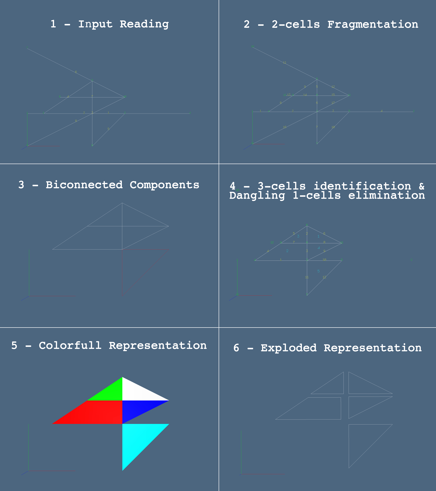

Arrangement of cellular complexes in two-dimensional spaces
The module Arangement provides two dimensional space arrangements via the following method (accesible from the LinearAlgebraicRepresentation namespace):
LinearAlgebraicRepresentation.planar_arrangement — Function.planar_arrangement(V::Points, copEV::ChainOp
[, sigma::Chain[, return_edge_map::Bool[, multiproc::Bool]]]
)Compute the arrangement on the given cellular complex 1-skeleton in 2D. Whole arrangement's algorithmic pipeline.
A cellular complex is arranged when the intersection of every possible pair of cell of the complex is empty and the union of all the cells is the whole Euclidean space. The method with no additional arguments specified gives back the full arranged complex V, EV and FE.
See also:
Lar.Arrangement.planar_arrangement_1Lar.Arrangement.biconnected_componentsLar.Arrangement.planar_arrangement_2
Additional arguments:
sigma::Chain: if specified,planar_arrangementwill delete from the output every edge and face outside this cell. Defaults to an empty cell.return_edge_map::Bool: makes the function return also anedge_mapwhich maps the edges of the imput to the one of the output. Defaults tofalse.multiproc::Bool: Runs the computation in parallel mode. Defaults tofalse.
Many examples could be found in Lar Documentation and examples directory.
In general we recall the notation we have used in source code:
V::Lar.Pointsis the 1-cells (Vertices) complex by Columns.W::Lar.Pointsis the 1-cells (Vertices) complex by Rows.EV::Lar.Cellsis the 2-cells (Edges) complex.FV::Lar.Cellsis the 3-cells (Faces) complex.copEV::Lar.ChainOp: is the Chain Coboundary of the 2-cells.copFE::Lar.ChainOp: is the Chain Coboundary of the 3-cells.bigPI::Array{Array{Int64,1},1}: is the bounding box intersection array:
each row is associated to a 2-cell and contains the indices of the other 2-cells intersecting its bounding box.
Do remember that in planar_arrangement (Lar.Arrangement module) matrices store points per row and not per column as described in the documentation of Lar.Points.
The Arrangement Algorithm
In this section we will provide a general overview of how the planar_arrangement is meant to work.
The algorithm is divided into the following pipeline:
- Fragmentation of the 2-Cells.
- Spatial Indexing.
- Pairwise 2-Cells Fragmentation.
- Vertices Identification.
- Biconnected Components Detection.
- 3-Cells Evaluation and Dangling 2-Cells Elimination via Topological Gift Wrapping (TGW) algorithm.
- Component graph evaluation (TGW offline part).
- Evalution of the external cicle.
- Containment graph evaluation.
- Pruning of the containment graph.
- Transitive $R$ reduction of $S$ and generation of forest of flat trees
- Decomposition Cleaning (if a boundary has been specified).
- Shell poset aggregation (TGW onloine part).
- Component graph evaluation (TGW offline part).
Fragmentation of the 2-Cells
This part of the pipeline is covered by:
function planar_arrangement_1(V, copEV[, sigma[, return_edge_map[, multiproc]]])First part of arrangement's algorithmic pipeline.
This function computes the pairwise intersection between each edge of a given 2D cellular complex 1-skeleton. The computation is speeded up via the evaluation of the Spatial Index. See Lar.spaceindex.
See also: Lar.planar_arrangement for the complete pipeline.
Examples
julia> EV = [[1, 2], [3, 4], [1, 3], [2, 4], [5, 6], [7, 8], [5, 7], [6, 8]];
julia> V = [
0.0 0.5 0.0 0.5 0.3 1.0 0.3 1.0;
0.0 0.0 1.0 1.0 0.5 0.5 1.0 1.0
];
julia> W = convert(Lar.Points, V'); # Infering type for W = V'
julia> cop_EV = Lar.coboundary_0(EV::Lar.Cells);
julia> W1, copEV1 = Lar.planar_arrangement_1(W::Lar.Points, cop_EV::Lar.ChainOp)
([0.0 0.0; 0.5 0.0; … ; 1.0 0.5; 1.0 1.0],
[1 , 1] = 1
[4 , 1] = 1
[1 , 2] = 1
⋮
[11, 8] = 1
[9 , 9] = 1
[11, 9] = 1)
julia> EV1 = Lar.cop2lar(copEV1);
julia> V1 = convert(Lar.Points, W1');
julia> Plasm.view(Plasm.numbering(0.1)((V,[[[k] for k=1:size(V,2)], EV])));
julia> Plasm.view(Plasm.numbering(0.1)((V1,[[[k] for k=1:size(V1,2)], EV1])));A small set of optional parameters could be choosen in order to personalize the computation:
sigma::Lar.Chain: if specified, the arrangement will delete from the output every edge outside this cell (by defaults = empty cell, no boundary).return_edge_map::Bool: If set to true, the function will also return anedge_mapthat maps the input edges to the corresponding output ones.multiproc::Bool: If set to true, execute the arrangement in parallel (by default = false, sequential).
Once the data have been aquired, a spatial indexing between the 2-cells is made up in order to speed up the computation.
LinearAlgebraicRepresentation.spaceindex — Function.spaceindex(model::Lar.LAR)::Array{Array{Int,1},1}Generation of space indexes for all $(d-1)$-dim cell members of model.
Spatial index made by $d$ interval-trees on bounding boxes of $σ ∈ S_{d−1}$. Spatial queries solved by intersection of $d$ queries on IntervalTrees generated by bounding-boxes of geometric objects (LAR cells).
The return value is an array of arrays of ints, indexing cells whose containment boxes are intersecting the containment box of the first cell. According to Hoffmann, Hopcroft, and Karasick (1989) the worst-case complexity of Boolean ops on such complexes equates the total sum of such numbers.
Examples 2D
julia> V = hcat([[0.,0],[1,0],[1,1],[0,1],[2,1]]...);
julia> EV = [[1,2],[2,3],[3,4],[4,1],[1,5]];
julia> Sigma = Lar.spaceindex((V,EV))
5-element Array{Array{Int64,1},1}:
[4, 5, 2]
[1, 3, 5]
[4, 5, 2]
[1, 3, 5]
[4, 1, 3, 2]From model2d value, available in ?input_collection docstring:
julia> Sigma = spaceindex(model2d);Example 3D
model = model3d
Sigma = spaceindex(model3d);
SigmaThen each single 2-cell is fragmented by intersecting it with the other 2-cells that shares the same bounding box. This process is either done in a parralel or a sequtial way via:
frag_edge_channel(in_chan, out_chan, V, EV, bigPI)Utility function for parallel edge fragmentation.
This function handles the edge fragmentation in the first part of arrangement's algorithmic pipeline (see also Lar.Arrangement.planar_arrangement_1) during multiprocessing computation. In order to do so it needs two Distributed.RemoteChannels, one with the inputs and one for outputs.
See also: Lar.Arrangement.frag_edge
frag_edge(V, EV, edge_idx, bigPI)Splits the edge_idx-th edge in EV.
This method splits the edge_idx-th edge in EV into several parts by confronting it with the others that intersect its bounding box (see also Lar.Arrangement.intersect_edges).
The method returns a set of the new vertices that the segment is made of (with redundancies) and the associated cochain (with no redundancies).
See also:
Examples
julia> V = [1.0 0.0; 0.0 1.0; 0.0 0.5; 0.5 1.0; 1.0 1.0]; # By Rows!
julia> EV = [[1, 2], [2, 5], [3, 4], [4, 5]];
julia> copEV = Lar.coboundary_0(EV::Lar.Cells);
julia> bigPI = Lar.spaceindex((convert(Lar.Points, V'), EV));
julia> Lara.frag_edge(V, copEV, 1, bigPI)[1]
5×2 Array{Float64,2}:
1.0 0.0
0.0 1.0
1.0 0.0
0.25 0.75
0.0 1.0
julia> Lara.frag_edge(V, copEV, 1, bigPI)[2]
2×5 SparseMatrixCSC{Int8,Int64} with 4 stored entries:
[1, 1] = 1
[2, 2] = 1
[1, 4] = 1
[2, 4] = 1if the parallel way is choosen (namely frag_edge_channel is used) then a few more parameters must be specified:
in_chan::Distributed.RemoteChannel{Channel{Int64}}: an input channel made of the edges indices to be intersected; the channel must also hold at the end an EoW (-1) indicator for each worker thread in use.out_chan::Distributed.RemoteChannel{Channel{Int64}}: a ready-to-use output channel.
In order to split the edge, at a lower level, each pair of possible intersecting 2-cells are compared via:
intersect_edges(V, edge1, edge2)Finds the intersection point (if there exists) between the two given edges.
This method compute the points where edge2 intersect edge1. If they are collinear only the vertices of edge2 are considered (see the second example).
See also: Lar.Arrangement.frag_edge
Examples
# Cross
julia> V = [1.0 0.0; 0.0 1.0; 0.0 0.5; 0.5 1.0]; # By Rows!
julia> EV = [[1, 2], [3, 4]];
julia> copEV = Lar.coboundary_0(EV::Lar.Cells);
julia> Lara.intersect_edges(V, copEV[1, :], copEV[2, :])
1-element Array{Tuple{Array{T,2} where T,Float64},1}:
([0.25 0.75], 0.75)# Collinear
julia> V = [1.0 0.0; 0.0 1.0; 0.75 0.25; 0.5 0.5]; # By Rows!
julia> EV = [[1, 2], [3, 4]];
julia> copEV = Lar.coboundary_0(EV::Lar.Cells);
julia> Lar.Arrangement.intersect_edges(V, copEV[1, :], copEV[2, :])
2-element Array{Tuple{Array{T,2} where T,Float64},1}:
([0.75 0.25], 0.25)
([0.5 0.5], 0.5)
julia> Lar.Arrangement.intersect_edges(V, copEV[2, :], copEV[1, :])
0-element Array{Tuple{Array{T,2} where T,Float64},1}In the end, the 1-cells are identified if they are located spatially very close one to the other (i.e $\epsilon = 10^{-4}$). Of course if two 2-cells share the same endpoints then they are also identified in a unique 2-cell.
merge_vertices!(V, EV[, edge_map[, err]])Compact the vertices closer than err in a single one.
This method check one at time each vertex $v$ in V and identifies each other vertex within err with $v$ itself. The cochain EV is coherently modified (multiple edges between two vertices are not allowed). If an edge_map is given in input (this could be usefull during the planar arrangements), then also the map is coherently modified and given back in output.
See also: Lar.Arrangement.planar_arrangement_1
Examples
# Collinear
julia> V = [0.5 0.5; 0.0 0.0; 0.5 0.5; 1.0 1.0; 0.5 0.5; 1.0 1.0]; # By Rows!
julia> EV = [[1, 4], [3, 2], [5, 6], [1, 6], [5, 3]];
julia> copEV = Lar.coboundary_0(EV::Lar.Cells);
julia> Lara.merge_vertices!(V, copEV)[1]
3×2 Array{Float64,2}:
0.5 0.5
0.0 0.0
1.0 1.0
julia> Lara.merge_vertices!(V, copEV)[2]
2×3 SparseArrays.SparseMatrixCSC{Int8,Int64} with 4 stored entries:
[1, 1] = 1
[2, 1] = 1
[2, 2] = 1
[1, 3] = 1Here also two optional parameters could be specified:
edge_map::Array{Array{Int64,1},1}: Mapping from a set of edges to the edges of the given cochain. If it is given in input than a copy of it would be returned in output, with its values coherently rearranged with the vertices merging (by default = $[[-1]]$).err::Float64: Range of the vertex identification (by default = $1e-4$).
Choosing a good value for err is a very important issue. Note that the identification is sequentially made; therefore the following situation could happend: if three vertices are collinear and evenly spaciated, then
- if the second is identified in the third,
then the first and the third won't be identified;
- if the third is identified with the second,
then the first and the second will be identified;
This situation could be seen in the secon example given by the function documentation.
Biconnected Components Detection.
This part of the pipeline is covered by
biconnected_components(EV)Compute sets of 2-cells on the same 3-cells biconnected components.
The method evaluate the 2-cells $σ_i$ wich lies on the same 3-cells biconnected component $χ_j$ and gives back an array that contains an array of $σ_i$ for each $j$. Do note that if the cochain EV contains more copies of the same 2-cell then it will be considered like a 3-cell.
Intermediate part of Planar Arrangement's algorithmic pipeline.
See also: Lar.planar_arrangement for the complete pipeline.
Examples
julia> copEV = SparseArrays.sparse(Array{Int8, 2}([
[1 1 0 0 0 0] #1 -> 1,2 |
[1 0 1 0 0 0] #2 -> 1,3 |
[1 0 0 1 0 0] #3 -> 1,4 |
[1 0 0 0 1 0] #4 -> 1,5 |
[1 0 0 0 0 1] #5 -> 1,6
[0 1 1 0 0 0] #6 -> 2,3 |
[0 0 0 1 1 0] #7 -> 4,5 |
]));
julia> Lara.biconnected_components(copEV)
2-element Array{Array{Int64,1},1}:
[2, 6, 1]
[4, 7, 3]julia> copEV = SparseArrays.sparse(Array{Int8, 2}([
[1 1 0] #1 -> 1,2 |
[1 1 0] #2 -> 1,2 |
[1 0 1] #3 -> 1,2
]));
julia> Lara.biconnected_components(copEV)
1-element Array{Array{Int64,1},1}:
[2, 1]As a reader can see the components are evaluated regardless the model geometrical structure; in fact the 1-cells are not considered during the computation. This means that the abstract graph made by the edges is the only input needed by the function.
3-Cells Evaluation and Dangling 2-Cells Elimination.
This part of the pipeline is covered by
function planar_arrangement_2(V, copEV, bicon_comps
[, sigma[, return_edge_map[, multiproc]]]
)Second part of arrangement's algorithmic pipeline.
This function is the complete Topological Gift Wrapping (TGW) algorithm that is firstly locally used in order to decompose the 2-cells and then globally to generate the 3-cells of the arrangement of the ambient space $E^3$.
During this process each dangling 2-cell is removed. Do note that the isolated 1-cells are not removed by this procedure.
See also: Lar.planar_arrangement for the complete pipeline.
Examples
# Triforce
julia> V = [0.0 0.0; 2.0 0.0; 4.0 0.0; 1.0 1.5; 3.0 1.5; 2.0 3.0; 3.0 3.0];
julia> W = convert(Lar.Points, V');
julia> EV = SparseArrays.sparse(Array{Int8, 2}([
[1 1 0 0 0 0 0] #1 -> 1,2
[0 1 1 0 0 0 0] #2 -> 2,3
[1 0 0 1 0 0 0] #3 -> 1,4
[0 0 0 1 0 1 0] #4 -> 4,6
[0 0 1 0 1 0 0] #5 -> 3,5
[0 0 0 0 1 1 0] #6 -> 5,6
[0 1 0 1 0 0 0] #7 -> 2,4
[0 1 0 0 1 0 0] #8 -> 2,5
[0 0 0 1 1 0 0] #9 -> 4,5
[0 0 0 0 0 1 1]
]));
julia> Plasm.view(Plasm.numbering(0.5)(
(W,[[[k] for k=1:size(W,2)], Lar.cop2lar(EV)])
));
julia> bicon_comps = Lar.Arrangement.biconnected_components(EV);
julia> V, EV, FE = Lar.Arrangement.planar_arrangement_2(V, EV, bicon_comps);
julia> Plasm.view( Plasm.numbering1(0.5)((V, EV, FE)) );First of all the components of the graph are evaluated via
componentgraph(V, copEV, bicon_comps)Topological Gift Wrapping algorithm on 2D skeletons.
This is the offline part of the TGW algorithm. It takes in input a model and its biconnected components mapping and evaluates usefull informations:
- Number of biconnected components.
- Component Graph of the biconnected structure.
- The 1-cells structure (UNMODIFIED). <––––––––––––––- Could be removed?
- Association between non-dangling 2-cells and their orientation (for each component).
- Association between 3-cells and 2-cells (with orientation, for each component).
- Association between 3-cells and their orientation (for each component).
- Shell bounding boxes of the components.
See also: Lar.Arrangement.planar_arrangement_2 for the TGW.
Examples
# Papillon
julia> V = [0.0 0.0; 0.0 3.0; 2.0 1.5; 4.0 0.0; 4.0 3.0];
julia> copEV = SparseArrays.sparse(Array{Int8, 2}([
[1 1 0 0 0] #1 -> 1,2
[0 1 1 0 0] #2 -> 2,3
[1 0 1 0 0] #3 -> 3,1
[0 0 1 1 0] #4 -> 3,4
[0 0 0 1 1] #5 -> 4,5
[0 0 1 0 1] #6 -> 3,5
]));
julia> copFE = SparseArrays.sparse(Array{Int8, 2}([
[1 1 1 0 0 0] #1 -> 1,2,3
[0 0 0 1 1 1] #2 -> 4,5,6
[1 1 1 1 1 1] #3 -> 1,2,3,4,5,6 External
]));
julia> bicon_comps = [[1, 2, 3], [4, 5, 6]];
julia> Lara.componentgraph(V, copEV, bicon_comps)[1]
2
julia> Lara.componentgraph(V, copEV, bicon_comps)[2]
2×2 SparseMatrixCSC{Int8,Int64} with 0 stored entries
julia> Lara.componentgraph(V, copEV, bicon_comps)[4]
2-element Array{SparseMatrixCSC{Int8,Int64},1}:
[1, 1] = -1
[3, 1] = -1
[1, 2] = 1
[2, 2] = -1
[2, 3] = 1
[3, 3] = 1
[1, 3] = -1
[3, 3] = -1
[1, 4] = 1
[2, 4] = -1
[2, 5] = 1
[3, 5] = 1
julia> Lara.componentgraph(V, copEV, bicon_comps)[5]
2-element Array{SparseMatrixCSC{Int8,Int64},1}:
[1, 1] = -1
[1, 2] = -1
[1, 3] = 1
[1, 1] = 1
[1, 2] = 1
[1, 3] = -1
julia> Lara.componentgraph(V, copEV, bicon_comps)[6]
2-element Array{SparseVector{Int8,Int64},1}:
[1] = 1
[2] = 1
[3] = -1
[1] = -1
[2] = -1
[3] = 1
julia> Lara.componentgraph(V, copEV, bicon_comps)[7]
2-element Array{Any,1}:
([0.0 0.0], [2.0 3.0])
([2.0 0.0], [4.0 3.0])Then, if a special chain $\sigma$ has been specified, the given decomposition is cleaned from all the 2-cells (and consequently from alle the 1-cells) that are located ouside its boundary via
cleandecomposition(V, copEV, sigma)!!! NOT WORKING
This function clears the model (V, copEV) from all edges outside $σ$.
This function takes a model (V, copEV) and a Lar.Chain $σ$ and gives back the dropped model and and a vector todel of the 2-cells to drop.
Examples
# Nested Triangles
julia> V = [
0.0 0.0; 2.0 0.0; 4.0 0.0;
1.0 1.5; 3.0 1.5; 2.0 3.0;
2.0 -3.; -2. 3.0; 6.0 3.0
];
julia> copEV = SparseArrays.sparse(Array{Int8, 2}([
[1 0 1 0 0 0 0 0 0] #1 -> 1,3
[1 0 0 0 0 1 0 0 0] #2 -> 1,6
[0 0 1 0 0 1 0 0 0] #3 -> 3,6
[0 1 0 1 0 0 0 0 0] #4 -> 2,4
[0 1 0 0 1 0 0 0 0] #5 -> 2,5
[0 0 0 1 1 0 0 0 0] #6 -> 4,5
[0 0 0 0 0 0 1 1 0] #7 -> 7,8
[0 0 0 0 0 0 1 0 1] #8 -> 7,9
[0 0 0 0 0 0 0 1 1] #9 -> 8,9
]));
julia> σ = SparseArrays.sparse([0; 0; 0; 1; 1; 1; 0; 0; 0]);
todel, V, copEV = Lara.cleandecomposition(V, copEV, convert(Lar.Chain, σ))
Plasm.view(convert(Lar.Points, V'), Lar.cop2lar(copEV));Lastly the 2-cells are merged in order to retrieve the 3-cell of the complex. By doing so, all the 2-cells that are not linked to any 3-cell (i.e. dangling edges) are lost.
Do note that the 1-cells are not pruned during this computation. Therefore the vertices associated with dangling edges will still be there.
This last part of the computation is done via:
cell_merging(n, containment_graph, V, EVs, boundaries, shells, shell_bboxes)Cells composing for the Topological Gift Wrapping algorithm.
This is the online part of the TGW algorithm.
See also: Lar.Arrangement.planar_arrangement_2.
Component graph evaluation
Component Graph evaluation relies on different functions that could be use separatelly in order to obtain different results.
First of all we use the following function on each biconnected component in order to gain the faces of the complex:
get_external_cycle(V, EV, FE)Evaluates the index of the external 3D-cell.
This method looks for and retrieve the external cycle of the model (V, EV, FE). If the cell does not exist then it return a Nothing element.
See also: Lar.Arrangement.componentgraph.
Examples
# ``K^4`` graph
julia> V = [0.0 0.0; 4.0 0.0; 2.0 3.0; 2.0 1.5];
julia> copEV = SparseArrays.sparse(Array{Int8, 2}([
[1 1 0 0] #1 -> 1,2
[0 1 1 0] #2 -> 2,3
[1 0 1 0] #3 -> 3,1
[1 0 0 1] #4 -> 1,2
[0 1 0 1] #5 -> 2,3
[0 0 1 1] #6 -> 3,1
]));
julia> copFE = SparseArrays.sparse(Array{Int8, 2}([
[1 0 0 1 1 0] #1 -> 1,4,5
[0 1 0 0 1 1] #2 -> 2,5,6
[0 0 1 1 0 1] #3 -> 3,4,6
[1 1 1 0 0 0] #4 -> 1,2,3 External
]));
julia> Lara.get_external_cycle(V, copEV, copFE)
4
julia> typeof(Lara.get_external_cycle(V, copEV, copFE[1:3,:]))
NothingThen a containment graph is build in order to clarify if some biconnected component relies in another biconnected component. To do so, the approach is similiar to what we did with the 2-cells decomposition. We firstly build the bounding box of each component and we check whether they are one inside the other via:
pre_containment_test(bboxes)Generate the containment graph associated to bboxes.
The function evaluate a SparseArrays{Int8, n, n} PRE-containmnet graph in the sense that it stores 1 when the bbox associated to the i-th component contains entirely the bbox associated to the j-th one. (where n = length(bboxes))
See also:
Examples
# Planar Tiles
julia> bboxes = [
([0.0 0.0], [1.0 1.0])
([0.0 0.0], [0.4 0.4])
([0.6 0.0], [1.0 0.4])
([0.0 0.6], [0.4 1.0])
([0.6 0.6], [1.0 1.0])
([2.0 3.0], [2.0 3.0]) # no intersection
];
julia> Lara.pre_containment_test(bboxes)
5×5 SparseMatrixCSC{Int8,Int64} with 4 stored entries:
[2, 1] = 1
[3, 1] = 1
[4, 1] = 1
[5, 1] = 1Then we prune the resulting mapping using:
prune_containment_graph(n, V, EVs, shells, graph)Prunes the containment graph from the non-included faces.
This method prunes the containment graph eliminating the included bouning boxes that not corresponds to included faces.
Do note that this method expects to work on biconnectet clusters of faces.
See also:
```
In order to do so we take each biconnected component $\phi$ whose bounding box is inside the bounding box of $\psi$ ($\forall \psi$) and we check if a point of $phi$ is or is not on the possible $\psi$ 3-cells. Do note that it is sufficient checking one single point since we know in advance that each couple of biconnected components is intersection free. Therefore if a single point of $\phi$ is inside a biconnected component $\psi$ then $\phi \subset \psi$.
However if three or more faces are nested one into the other, then the mapping is redundant. We therefore eliminate this redundany by applying:
transitive_reduction!(graph)Prune the redundancies in containment graph.
The $m$-layer containment graph is reduced to the 1-layer containment graph where only the first level nested components are considered.
See also: Lar.Arrangement.componentgraph.
Examples
julia> containment = [
0 0 0 0 0 0
0 0 0 0 0 0
1 0 0 0 0 0
1 0 0 0 0 0
1 0 1 0 0 0
1 0 1 0 1 0
];
julia> transitive_reduction!(containment)
julia> containment
6×6 Array{Int64,2}:
0 0 0 0 0 0
0 0 0 0 0 0
1 0 0 0 0 0
1 0 0 0 0 0
0 0 1 0 0 0
0 0 0 0 1 0Examples
Lastly we close this section by giving a small example of how Planar Arrangement Works. Using Plasm we are able to visualize the step of the computation grafically.
using Plasm
using LinearAlgebraicRepresentation
Lar = LinearAlgebraicRepresentation;
# Data Reading
V = [
0.0 0.5 3.0 5.0 2.0 2.0 0.0 1.0 0.0 3.0;
1.0 1.0 1.0 1.0 2.0 0.0 3.0 1.5 0.0 1.5
];
EV = [[1, 4], [2, 3], [5, 6], [2, 5], [3, 6], [7, 10], [8, 10], [9, 10]];
## 1 - Input Reading
Plasm.view(Plasm.numbering(0.5)((V,[[[k] for k=1:size(V,2)], EV])));
# Planar Arrangement 1
W = convert(Lar.Points, V'); # Infering type for W = V'
copEV = Lar.coboundary_0(EV::Lar.Cells);
W1, copEV1 = Lar.planar_arrangement_1(W::Lar.Points, copEV::Lar.ChainOp);
## 2 - 2-cells fragmentation
EV1 = Lar.cop2lar(copEV1);
V1 = convert(Lar.Points, W1');
Plasm.view(Plasm.numbering(0.5)((V1,[[[k] for k=1:size(V1,2)], EV1])));
# Biconnected COmponent Evaluation
bicon_comps = Lar.Arrangement.biconnected_components(copEV1);
## 3 - Biconnected Components
hpcs = [ Plasm.lar2hpc(V1,[EV1[e] for e in comp]) for comp in bicon_comps ]
Plasm.view([
Plasm.color(Plasm.colorkey[(k%12)==0 ? 12 : k%12])(hpcs[k])
for k = 1 : (length(hpcs))
])
# computation of 2-cells and 2-boundary
W2, copEV2, copFE2 = Lar.planar_arrangement_2(W1, copEV1, bicon_comps)
## 4 - 3-cells identification & dangling 1-cells elimination
Plasm.view( Plasm.numbering1(0.5)((W2, copEV2, copFE2)) )
# 5 - Colorfull Representation
triangulated_faces = Lar.triangulate2D(W2, [copEV2, copFE2])
V2 = convert(Lar.Points, W2')
FVs2 = convert(Array{Lar.Cells}, triangulated_faces)
Plasm.viewcolor(V2::Lar.Points, FVs2::Array{Lar.Cells})
# polygonal face boundaries
EVs2 = Lar.FV2EVs(copEV2, copFE2)
EVs2 = convert(Array{Array{Array{Int64,1},1},1}, EVs2)
Plasm.viewcolor(V2::Lar.Points, EVs2::Array{Lar.Cells})
# 6 - Exploded Representation
model = V2,EVs2
Plasm.view(Plasm.lar_exploded(model)(1.2,1.2,1.2))The described commands gives the following representation via Plasm. Here we have reunited all the images in order to clarify the example. It could be seen in (4) that the 1-cells are not removed via the Pipeline. 
Figure 1: Pipeline visualization over a sample structure.
More examples could be find in the test and examples directory.